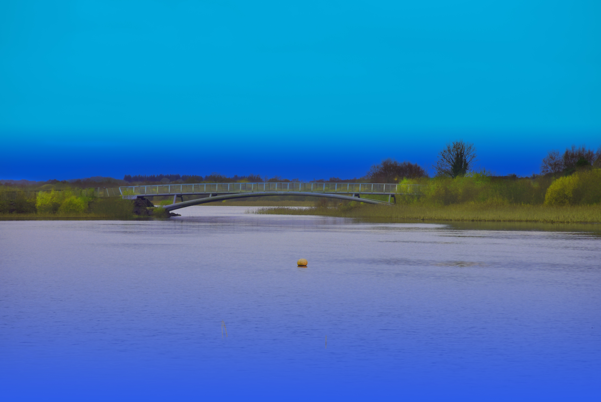
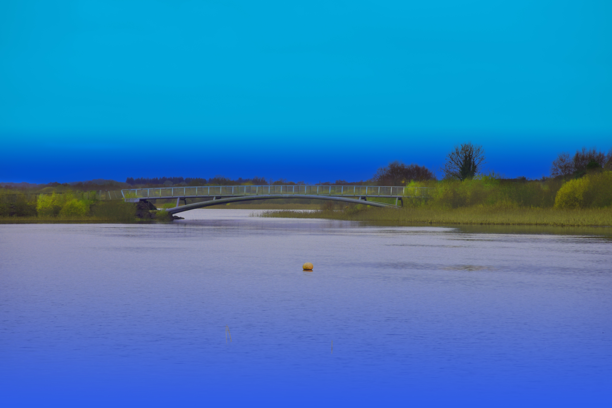
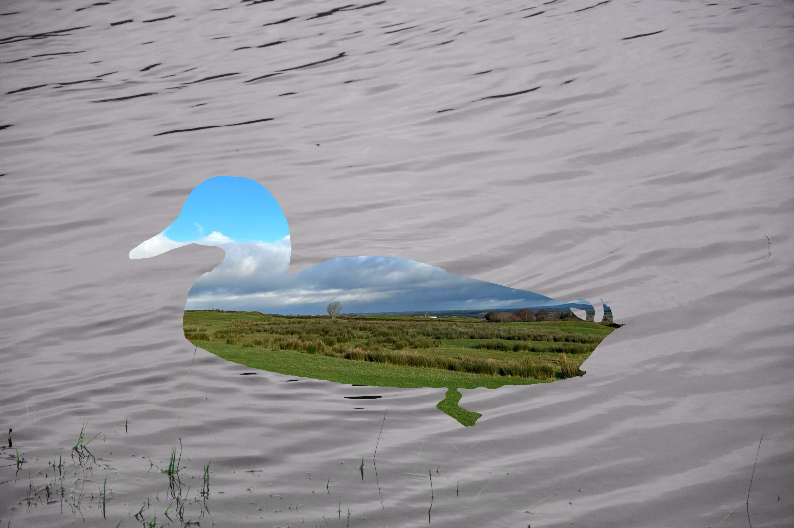
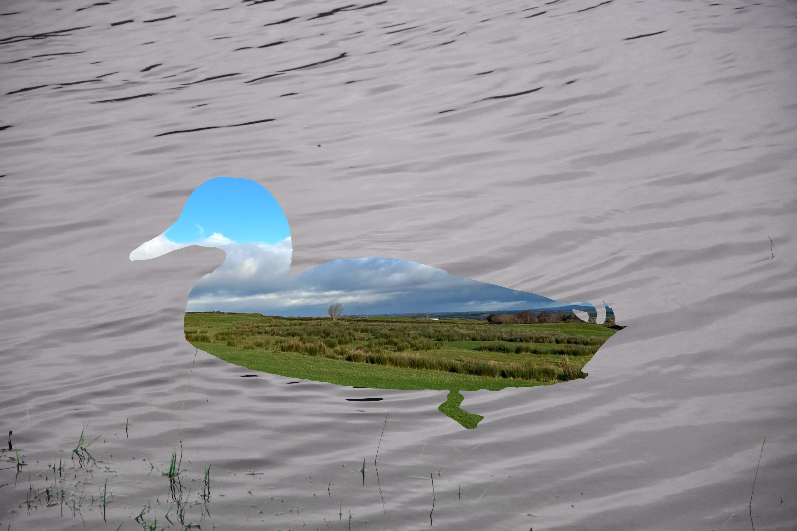
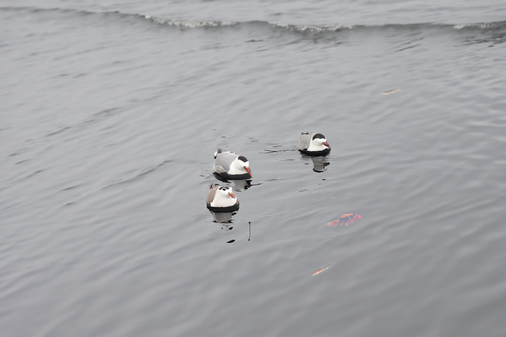
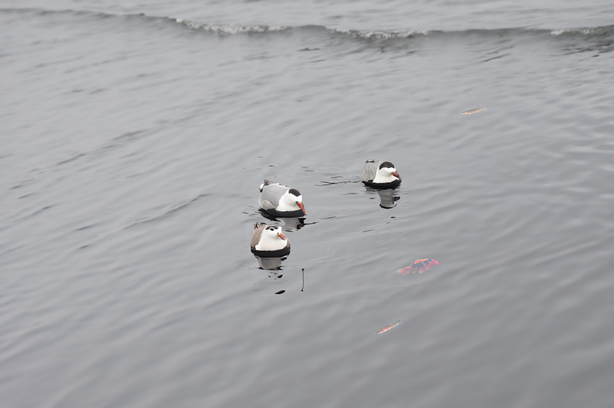
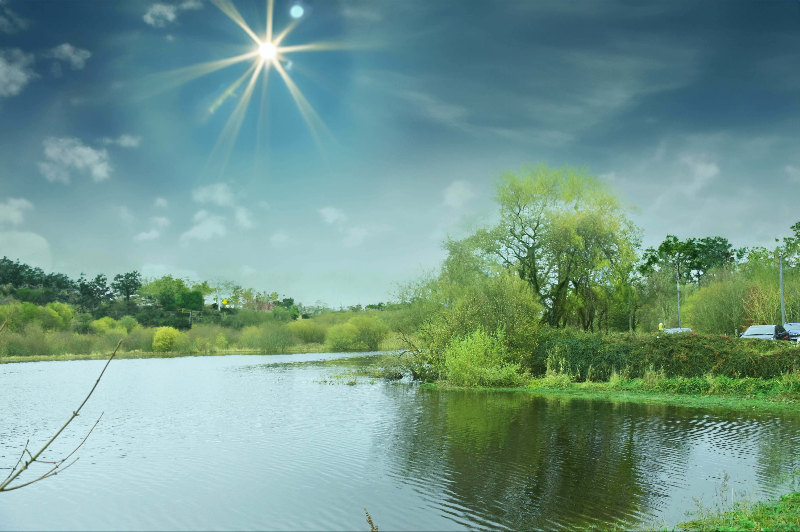
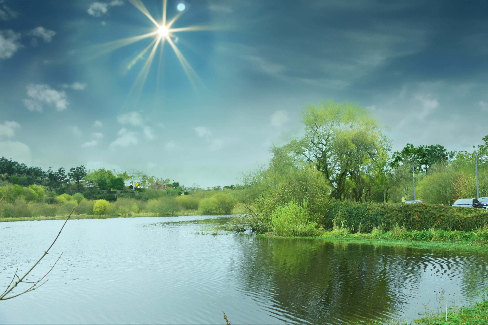

My Photography Project
The Photography project focused on the beauty of nature, specifically the stunning landscapes of Lough Lannagh. I captured the breathtaking views, lush green surroundings, and peaceful ambiance of the lake. The chosen theme is excellent, combining visual appeal with meaningful elements, evoking a sense of peace and reminding us to protect our environment.
The camera used to acquire the images for the calendar project was a Nikon D3400, a 24.2-megapixel DX format DSLR Nikon F-mount camera. This camera is well-suited for landscape photography, and it was able to capture the stunning scenery of Lough Lannagh in all its beauty. It also has a variety of features that allowed the photographer to control the shutter speed and aperture, which is important for creating creative effects.
Throughout the project, I acquired new techniques in image editing. I explored various tools such as Filters, Masks, and color modes, integrating AI and the Object Selection tool for more advanced selections. Specifically, I applied Desaturation and Texturiser from the Filter Gallery, employed Color Range and Hue/Saturation adjustments, and utilized the Brush tool for detailed edits. Layer management techniques included Layer Masks, Clipping Masks, and the use of the Multiply layer effect. Additionally, I experimented with Hue/Saturation and Brightness/Contrast adjustments, used the Black and White adjustment tool, utilized the Reveal feature, and refined details using the Brush tool.


 

 

 



 
